Least squares rank among the most fundamental problems in Scientific Computing, Signal Processing, and Statistics. Over the years, numerous variants of the problem have been studied. A variant, which has attracted much attention in recent years, is:
BOX-CONSTRAINED INTEGER LEAST SQUARES (BILS): Given integers
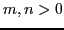
, a subset of integers , matrix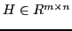
, and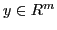
, return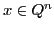
minimising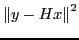
.The solving BILS to optimality is hard, in a number of precise senses. Notably, it is NP-hard to approximate within any constant factor [#!MR1462727!#]. We present an iterative solver for the problem, based on novel convex programming relaxations. Such relaxations strengthen the least squares relaxation, obtained by omitting the integrality constraints. In each iteration, a small number of violated valid inequalities are added, and the relaxation is reoptimised.
There have been proposed numerous convex programming relaxations of BILS. (See Table  in the Appendix.)
They seem to be, however, either too expensive to compute (e.g.
high-dimensional semidefinite programming), or too weak (e.g. linear
programming). We propose a hierarchy of progressively stronger
relaxations in second order-cone programming (SOCP):
in the Appendix.)
They seem to be, however, either too expensive to compute (e.g.
high-dimensional semidefinite programming), or too weak (e.g. linear
programming). We propose a hierarchy of progressively stronger
relaxations in second order-cone programming (SOCP):
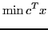 |
(1) | |
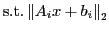 |
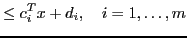 |
|
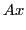 |
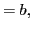 |
Our relaxations are based on the reformulation attributed to Atamtürk:
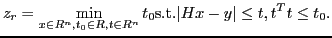 |
(6) |
Let us define the Conic Mixed Integer Rounding (MIR) function. For
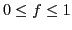
, the conic rounding function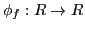
is:
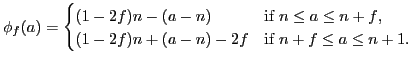
The extension to vectors is element-wise. For pure integer programs (
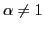
, the conic rounding cut hence is:
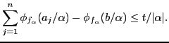
It is easy to see that for and
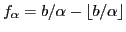
, conic rounding cuts are valid for pure integer programs (The choice of a cut has to take into account its violation and numerical safety [#!Cook2009!#]. After adding at most three cuts in a row, the newly obtain relaxation is optimised, possibly using the previous solution. The optimisation of the second-order cone program is, again, performed using an iterative method, such as the primal-dual interior point method. The complexity of each iteration of the interior point method is dominated the complexity of a matrix inversion of a
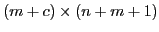
matrix, where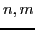
are the dimensions of the original matrixThis approach lead to the development of low-power application specific integrated circuits for the problem, which is of great importance in mobile communications. There are systolic digital designs for much of the interior point method already available. This could be seen as an extension of Boyd's notion of real-time convex programming to real-time integer convex programming.